AK103 · 30
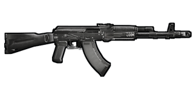

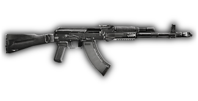
Слева — текущая обработка offline preview; в центре — мягкий контур; справа — тот же контур и лёгкая резкость. Цветовые профили, тело оружия и масштаб сохранены. Контур построен после сборки всех модулей. В игру этот прототип не установлен: текущий runtime outline может отличаться от левого offline-примера.


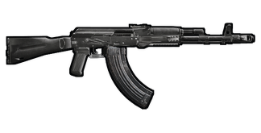
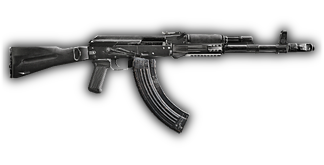
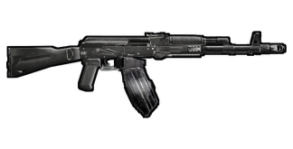
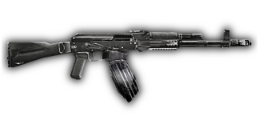
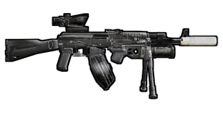
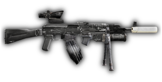
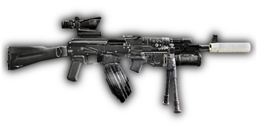
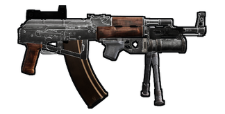
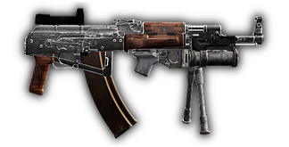
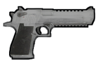

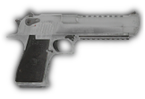
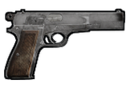

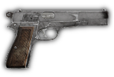